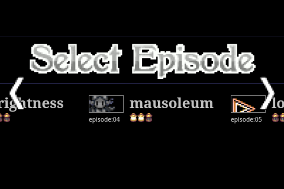
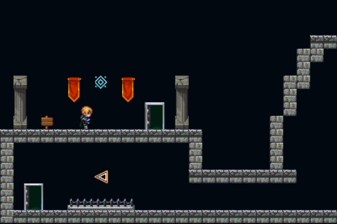
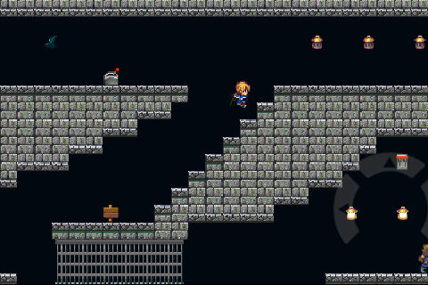

ゲーム紹介
初めてスマホ向けに作った「Moriy - the deep fact」をブラウザゲームとして復刻しました。
ワタシにしては珍しく自動生成ではなくステージクリア型の謎解きゲームです。毎夜作っては会社の先輩にプレイしてもらってました。
各ステージの謎を解き明かしてゴールを目指してください。クリア条件はステージごとに異なります。
スクリーンショット



遊び方
- 操作は左右と上（ジャンプ）のみです。
- スマートフォンの場合、タッチした位置に仮想パッドが現れますが、PCのカーソルキーの方がはるかに遊びやすいです。
- ゲーム中、音が重要なヒントになります。音が出せる環境でお楽しみください。
クレジット
ライブラリ、素材
- 画像素材: First Seed Material
- 効果音素材: ザ・マッチメイカァズ
- ロゴジェネレータ: Supalogo
- ゲームエンジン: enchant.js
開発
- ソースコード: yamahei/enchant_moriy | GitHub
- テキストエディタ: Atom
- 画像編集: GIMP